Role
Graphic designer
Client
Klein Media
Tools
Figma, SVG
Type
Internship project
A system of six main icons and nineteen sub icons for Klein Media’s services, each cluster with its own colour.
Graphic designer
Klein Media
Figma, SVG
Internship project
Klein Media offers a wide range of services, from strategy and websites to content and AI systems. Every service needed an icon that reads at small sizes, while the whole set still had to feel like one brand.
I designed one main icon for each of the six service clusters and a sub icon for every service inside it. They share the same visual language: white line work with a black outline, and a coloured shard behind each cluster so the colour tells you where you are. After feedback from the team I redrew parts of the set until the metaphors were clear.
Strategy, Websites, Design, Marketing, Content creation and AI systems each get their own main icon and shard colour.
Every service in a cluster has its own icon, numbered in the same order as the services in the brand book.
Thick outlines, flat colour and a few accents taken from the Klein Media palette keep the icons recognisable, even small.
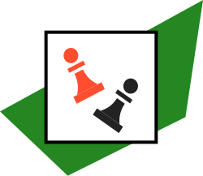
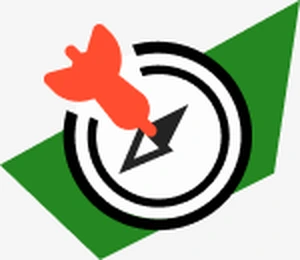
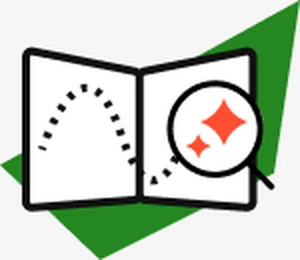
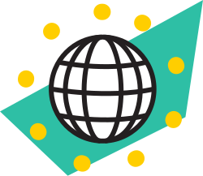
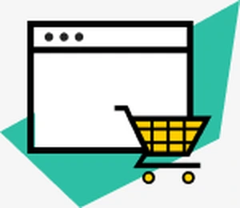
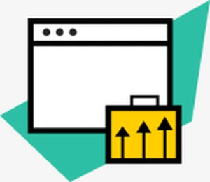
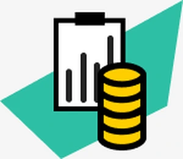
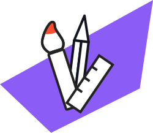
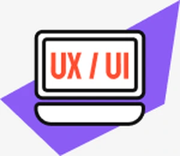
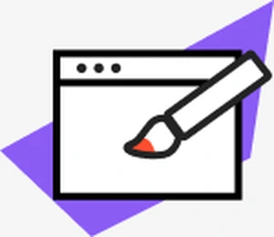
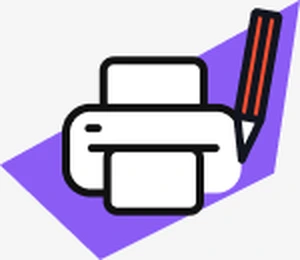
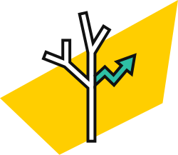
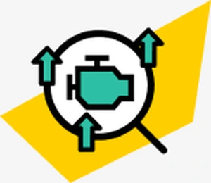
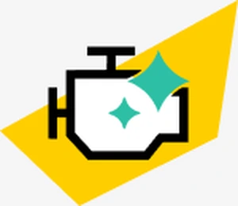
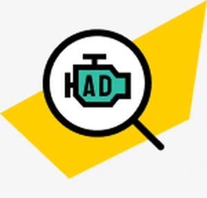
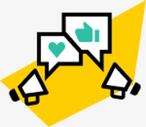
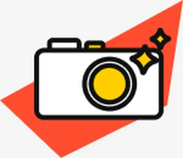
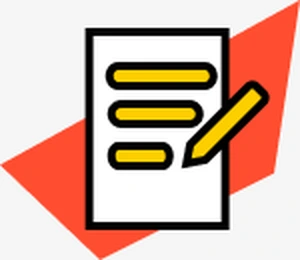
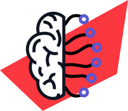
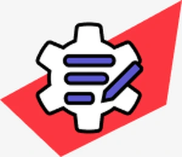